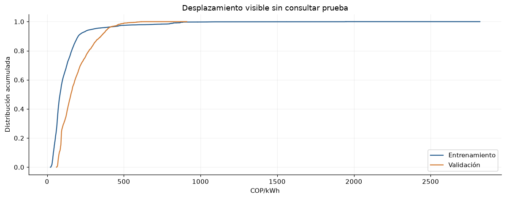

8. Partición, desplazamiento y controles de fuga#
La propuesta cronológica mantiene entrenamiento, validación y prueba separados. Sólo se muestran distribuciones del objetivo y covariables de entrenamiento/validación. Del tramo de prueba se usan calendario y controles de integridad/procedencia, sin explorar sus valores para decidir preprocesamiento.
KS se presenta como distancia descriptiva sin su p-valor IID; Wasserstein se normaliza con el IQR de entrenamiento. El intervalo de la diferencia de medias usa bootstrap de bloques móviles de 30 días, con 199 réplicas y semilla fija. Supone estabilidad aproximada dentro de cada periodo y se interpreta como diagnóstico.
La propuesta de siguiente fase usa origen diario, contexto de una semana y salida directa de las siguientes 24 horas. Los conteos de ventanas sólo usan calendario: no leen valores de prueba. Los horizontes que atraviesan un corte se purgan. Deben cerrarse las decisiones restantes en un preregistro de benchmark antes de entrenar modelos.
eda.validation_design()
| n | media | mediana | sd | p01 | p99 | ||
|---|---|---|---|---|---|---|---|
| variable | particion | ||||||
| precio_bolsa_cop_kwh | train | 157800 | 124.56 | 84.405 | 140.41 | 28.794 | 822.44 |
| demanda_real_kwh | train | 157800 | 6.1907e+06 | 6.1196e+06 | 1.3957e+06 | 3.396e+06 | 9.064e+06 |
| temperature_2m_c_bogota | train | 157800 | 14.903 | 14.1 | 3.4963 | 9.1 | 22.7 |
| relative_humidity_2m_pct_barranquilla | train | 157800 | 82.437 | 85 | 12.399 | 49 | 99 |
| precio_bolsa_cop_kwh | validation | 35064 | 186.48 | 155.21 | 107.04 | 67.955 | 502.3 |
| demanda_real_kwh | validation | 35064 | 8.0435e+06 | 8.0947e+06 | 1.1141e+06 | 5.908e+06 | 1.0057e+07 |
| temperature_2m_c_bogota | validation | 35064 | 14.797 | 14.1 | 3.2458 | 8.9 | 21.7 |
| relative_humidity_2m_pct_barranquilla | validation | 35064 | 80.729 | 83 | 12.893 | 47 | 99 |
| ks_D_descriptivo | wasserstein_div_IQR_train | diferencia_media_div_sd_train | |
|---|---|---|---|
| variable | |||
| precio_bolsa_cop_kwh | 0.44691 | 0.96208 | 0.44921 |
| demanda_real_kwh | 0.70806 | 1.1718 | 1.835 |
| demanda_comercial_kwh | 0.70631 | 1.1649 | 1.8283 |
| temperature_2m_c_bogota | 0.039557 | 0.09566 | -0.12368 |
| relative_humidity_2m_pct_barranquilla | 0.10834 | 0.1583 | -0.25779 |
| diferencia_media_COP_kWh | IC95_bloques_inferior | IC95_bloques_superior | dias_bloque | replicas | |
|---|---|---|---|---|---|
| 0 | 61.918 | 31.047 | 93.127 | 30 | 199 |

| origenes_candidatos_calendario | |
|---|---|
| train | 6568 |
| validation | 1461 |
| test | 1461 |
OK: versiones, captura, fechas futuras, supuestos, fuentes excluidas y zona horaria.
| pasa | |
|---|---|
| control | |
| carga de prueba bloqueada por defecto | True |
| horizonte que cruza corte eliminado | True |
El estadístico KS se presenta sin su p-valor IID: los días son dependientes. Wasserstein es un tamaño de desplazamiento, no prueba causal. El bootstrap de bloques conserva dependencia local y presupone estabilidad aproximada dentro de cada periodo; no corrige cambios estructurales por sí solo. Las ventanas se cuentan desde el calendario, sin leer los valores de prueba.
Implicaciones del análisis
Preprocesamiento: Ajustar toda transformación sólo con train. Si se recalibra con origen móvil, usar únicamente datos anteriores al origen y una política cerrada antes de prueba.
Arquitectura: Comparar capacidad de adaptación de modelos con el mismo presupuesto; no seleccionar una red con estas estadísticas de validación.
Validación: Prueba congelada; sólo integridad/calendario/cobertura. Contexto pasado puede atravesar el corte, etiquetas futuras no. Origen es inicio del intervalo a pronosticar.
Riesgos: La validación está explorada para documentar desplazamientos y ya no es un conjunto virgen. Las cotas de disponibilidad numérica y las revisiones de texto impiden afirmar un backtest operativo libre de fuga.